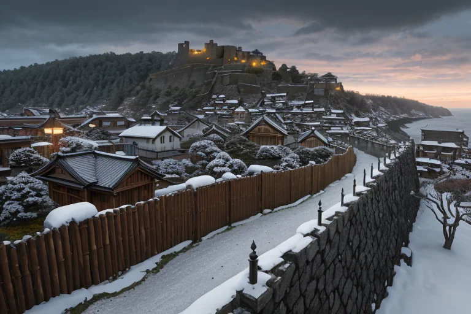
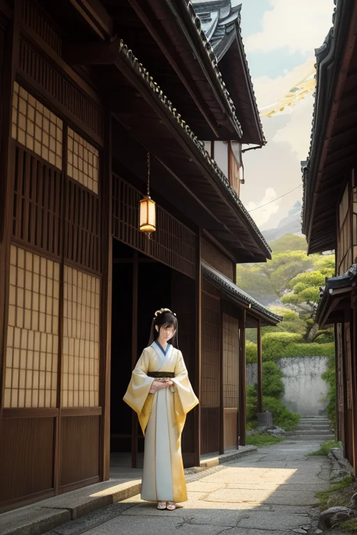
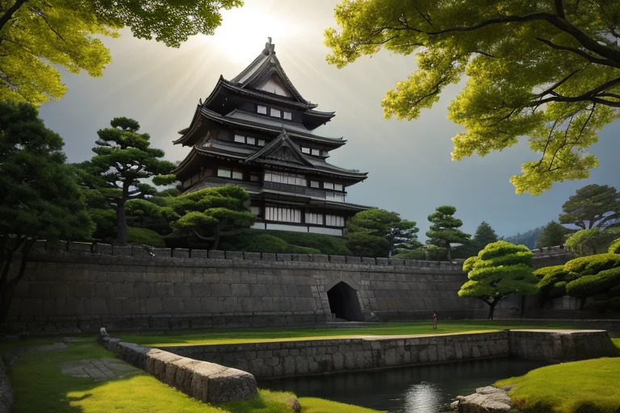
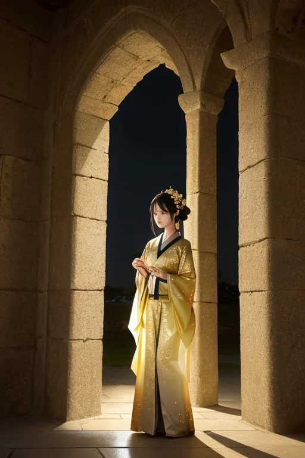
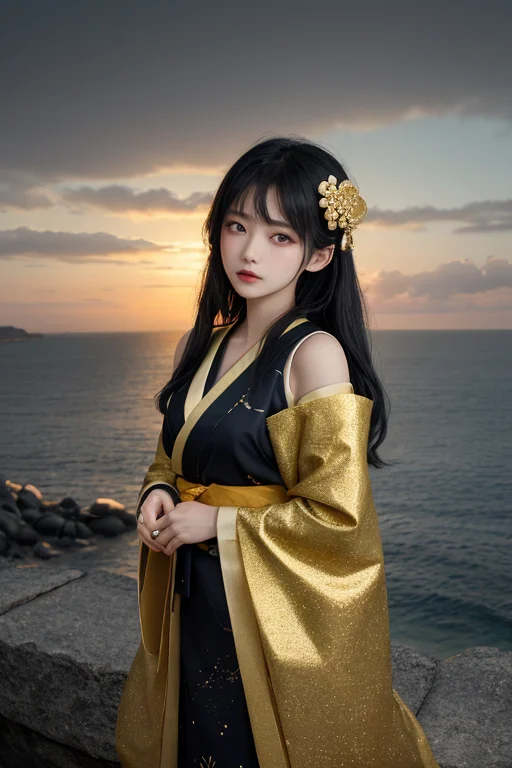

第一章 現実の石川
あなたはまだ気づいていない。この土地にも、王がいることを。
兼六園の雪吊りは、冬支度を始めていた。竹の骨組みに縄を張り、松の枝を守るその姿は、圧雪という現実に対する、静かで実直な美の防御だった。金沢城の石垣は、幾度の震災を経てなお、微かにその積み方を変え、次の衝撃に備えている。ここは、加賀百万石が文化という軟らかな力で国を治めた地である。同時に、日本海の荒波と地盤の歪みに、常に晒されてきた地でもある。
王、イシカリア・アルテは、金箔を貼るように薄く、この土地の「揺れ」を調整していた。巨大な力そのものを止めることはできない。だが、城下町の木造家屋が共振するその一瞬前に、ほんのわずかな「間」を創り出す。瓦が落ちる軌道を、人通りのない路地へと微調整する。それは、職人が漆塗りの表面を平滑にするように、現実の粗を整える作業だった。
彼は問う。この調整そのものが、守る行為なのか。それとも、新たな均衡という「美」を、その都度創り出しているのか。答えは出ない。彼の手元では、妖精アルティナが、町並みの文化的記憶を、光の糸で丁寧に紡いでいた。

第二章 歪みの兆候
輪島の朝市は、漆器の光沢と干物の潮香に満ちていた。王は、路地に立つ百年を超える塗師屋の軒先で、微かな振動を感知した。それは物理的な揺れではない。時間の層が、過去の「断絶」によって生じた歪みだ。明治の廃仏毀釈、戦争、そして過疎。幾度もの歴史の断層が、この土地の「続けること」の連続性を、目に見えぬ亀裂として刻んでいた。
「記憶の綻びです」と、アルティナが光の糸を示す。その糸は、途切れそうな細さになっている。伝承が薄れ、技法が形骸化し、美の意味が空洞化しようとする。その歪みは、物理的な基盤そのものを脆くする地盤の緩みとして、現実に反映され始めていた。
彼は金箔を模した紋章を掌に浮かべる。守るべき伝統の重み。しかし、形だけを守り、魂を失った美は、もはや美ではない。彼は職人としての手触りで、その歪みを撫でる。創ることなくして、守ることはできないのか。彼の静かな情熱が、初めて、焦燥に似た疼きを覚えた。

第三章 王の葛藤
金沢城の白亜の壁に、朝日が金箔のように散った。イシカリア・アルテは、その光の中に立っていた。掌上の紋章は微かに震え、伝えられてきた無数の「型」の記憶が、今、彼の内で軋みをあげる。守るべき伝統の重層。しかし、その重みが、かえって新たな息吹を阻み、土地の「美」の循環を滞らせている。歪みは地盤の緩みとして確かに存在し、次の大きな揺れの予兆を告げていた。
「このままでは、形骸が残り、魂が消える」
彼は囁いた。主席妖精アルティナが傍らに現れ、光の粒を無言で撒く。彼女の保全する記憶の全てが、変革への警鐘でもあった。王の役目は調整。破壊ではなく、均衡。だが、今求められているのは、古い均衡そのものの更新かもしれない。職人としての彼の手は、既存の「型」を守り修復するためにあった。しかし、その手で、古い枠を一度壊し、新たな「型」を創り出すことは許されるのか。
彼は目を閉じ、輪島の海鳴りを聴いた。守るだけでは、やがて守るものさえ失う。創ることこそが、真に守る行為であるなら――。紋章の輝きが、一瞬、鋭く増した。

第四章 妖精との対話
金沢城の石垣に、夕陽が金箔を貼るように染めていた。イシカリア・アルテの傍らで、アルティナの光が微かに震えた。
「王よ。あなたの逡巡は、私たちにも伝わります」
彼女の声は、工房で研がれる砥石の音のように静かだった。
「私たちは、この地に積み重ねられた美の記憶を保全する者です。加賀友禅の文様、輪島塗の沈金、茶屋街の格子…一つ一つが、消えてはならない歴史の断片です」
風が通り、カナザリアの金箔光がちらついた。
「しかし」とアルティナは続けた。「保全とは、単なる固定ではありません。輪島の海が絶えず岸を削り、新たな形を生むように。金箔は、下地がなければ輝きを保てません。下地そのものが朽ちれば、箔は剥がれ落ちるだけです」
彼女の光が、王の紋章をそっと包んだ。
「創ることは、最大の保全です。新たな美が生まれ、古い美がその価値を再確認される。その循環こそが、この土地の『美意識振動』を維持してきました。変革は破壊ではなく…次の層を支える、新たな下地を創る行為なのです」
王は、自らの手のひらを見つめた。職人の手は、壊すためではなく、創るためにある。

第五章 微調整と余韻
輪島の朝市が開かれる時間、海は鉛色をしていた。王は、港を見下ろす丘の上に立っていた。彼の目には、地盤の巨大な「歪み」が、漆黒の亀裂として見えていた。妖精たちの報告は一致する。これ以上の調整は不可能。この歪みは解消され、巨大なエネルギーが解放される運命にある。
「できることは、『方向』だけです」
アルティナが囁いた。王は頷いた。彼の力で、解放されるエネルギーのベクトルを、ほんの数度、海側へと曲げることができる。町を、人を、千年の記憶を積み重ねた漆器の工房を、直接の衝撃からかわす代わりに。代償は、彼自身の「存在の持続性」だ。彼の核となる紋章が、この一撃で砕ける。
彼は両手を広げた。金箔の紋章が空中に煌めき、土地の全ての「美意識の振動」を集め始める。職人の息遣い、漆を塗る刷毛の音、市場の活気、海の塩の香り。それら全てが光の糸となり、彼の紋章に紡がれる。
「創ることは、守ることだ」
王は静かに宣言し、両腕を押し出した。
地鳴りが世界を覆った。しかし、町を襲うはずだった破壊の主力は、彼が創り出した光の障壁によって微かに方向を変え、沖合へと流されていった。砕ける紋章の金色の破片が、雪のように降り注ぐ。彼の輪郭が揺らぎ、透明になっていく。
丘の上には、もう誰もいない。ただ、朝市の賑わいが、いつもより少しだけ静かに、確かに、聞こえている。
あなたの町にも、王がいる。